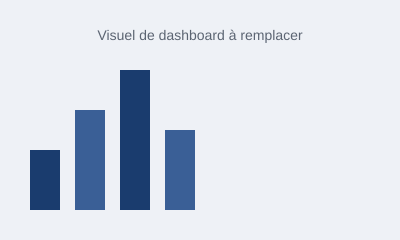

Analyse de données
- Excel (avancé)
- Power BI
- Stata
- SPSS
Data Analyst • Étudiant en Économie Appliquée
Je transforme vos données en décisions concrètes : dashboards clairs, prévisions fiables et analyses chiffrées, pour des entreprises, PME et ONG en quête de clarté.

À propos
Étudiant en économie appliquée à l'Université Amadou Makhtar MBOW (UAM) de Diamniadio, Dakar (Sénégal), et data analyst, je transforme des données brutes en décisions concrètes : dashboards clairs, modèles de prévision et études de marché chiffrées. Je maîtrise l'économétrie (R, Stata) ainsi que les outils de visualisation (Excel, Power BI, Tableau), et j'intègre l'intelligence artificielle pour accélérer l'exploration des données, automatiser les tâches répétitives et fiabiliser mes analyses.
Mon approche : livrer des analyses rigoureuses et actionnables, pas de simples graphiques. Je m'adresse aux entreprises, PME et ONG qui veulent des recommandations claires et chiffrées pour orienter leurs décisions.
Compétences
Projets

Analyse SQL des effectifs, performances et turnover pour répondre à 15 questions business RH.
Étude data d'une plateforme e-commerce panafricaine : 10 100 commandes analysées pour orienter la stratégie produit et marketing.
Dashboard R Shiny interactif sur 10 000 consultations médicales pour suivre l'activité sanitaire par région.
Contact
Disponible pour des missions freelance et des postes de data analyst.